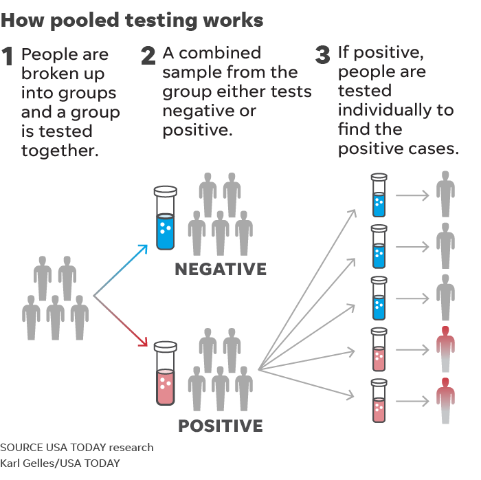

<!-- Content -->
<div class="w3-content" style="max-height:800px;max-width:1100px;margin-top:80px;margin-bottom:80px">


<!-- Slideshow -->


  <div class="w3-container">

    <div class="w3-display-container mySlides">
    <a href="https://www.usatoday.com/story/opinion/2020/08/25/how-pooled-testing-covid-19-may-help-schools-reopen-safely-column/3399508001/">
      
      
      <div class="w3-display-bottomright w3-container w3-padding-32">
        <span class="w3-white w3-padding-large w3-animate-bottom">25 August, 2020: <i>USA Today</i> Op-ed</span>
    </a>
      </div>
    </div>

    <div class="w3-display-container mySlides">
    <a href="https://ldi.upenn.edu/healthpolicysense/pooled-sampling-covid-19-tests-holds-promise">
      
      <div class="w3-display-bottomright w3-container w3-padding-32">
        <span class="w3-white w3-padding-large w3-animate-bottom">25 August, 2020: Leonard Davis Institute Blog Post</span>
    </a>
      </div>
    </div>


    <div class="w3-display-container mySlides">
     <a href="https://www.his.org.uk/blog/2020/20200813-co-location-co-location-co-location/">
	
      <div class="w3-display-topleft w3-container w3-padding-32">
        <span class="w3-white w3-padding-large w3-animate-bottom">13 August, 2020: Healthcare Infection Society blog post</span>
	</a>
      </div>
    </div>

    <div class="w3-display-container mySlides">
    <a href="http://methods.sagepub.com/video/srmpromo/QrEhSp/studying-the-impact-of-patient-co-presence-in-hospitals-on-administrative-d">
      
      <div class="w3-display-bottomright w3-container w3-padding-32">
        <span class="w3-white w3-padding-large w3-animate-bottom">1 March, 2019: SAGE Research Methods Interview</span>
    </a>
      </div>
    </div>

    <div class="w3-display-container mySlides">
<a href="https://www.gtc.ox.ac.uk/news/news-articles/1944-jeff-lienert-wins.html">
      
      <div class="w3-display-middle w3-container w3-padding-32">
        <span class="w3-white w3-padding-large w3-animate-bottom">19 October, 2017: NDM 3rd Year Award</span>
</a>
      </div>
    </div>


    <!-- Slideshow next/previous buttons -->
    <div class="w3-container w3-dark-grey w3-padding w3-xlarge">
      <div class="w3-left" onclick="plusDivs(-1)"><i class="fa fa-arrow-circle-left w3-hover-text-teal"></i></div>
      <div class="w3-right" onclick="plusDivs(1)"><i class="fa fa-arrow-circle-right w3-hover-text-teal"></i></div>

      <div class="w3-center">
        <span class="w3-tag demodots w3-border w3-transparent w3-hover-white" onclick="currentDiv(1)"></span>
        <span class="w3-tag demodots w3-border w3-transparent w3-hover-white" onclick="currentDiv(2)"></span>
        <span class="w3-tag demodots w3-border w3-transparent w3-hover-white" onclick="currentDiv(3)"></span>
        <span class="w3-tag demodots w3-border w3-transparent w3-hover-white" onclick="currentDiv(4)"></span>
        <span class="w3-tag demodots w3-border w3-transparent w3-hover-white" onclick="currentDiv(5)"></span>
      </div>
    </div>
  </div>
